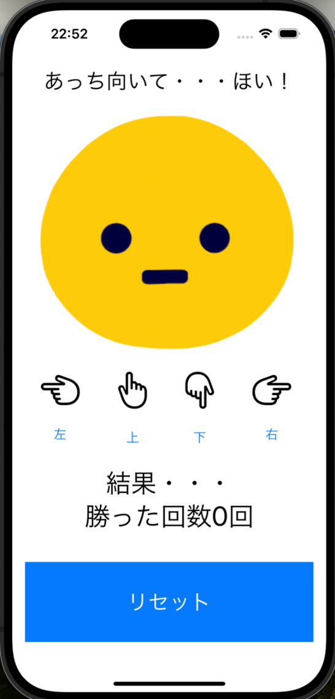
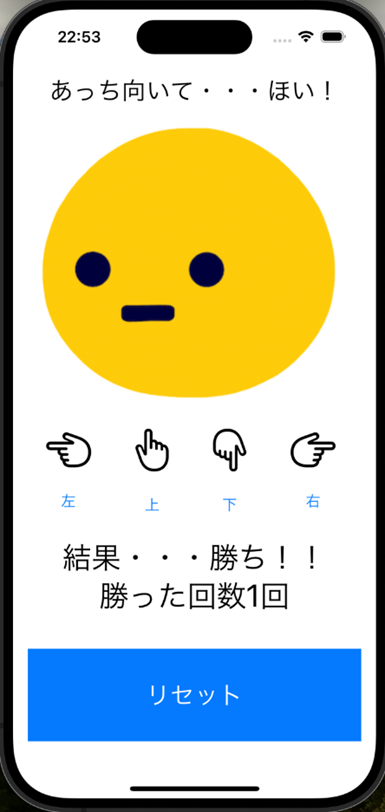
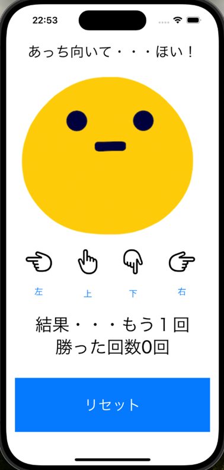

TextとButtonとImageの組み合わせ
□じゃんけんアプリを参考にしながら、「あっちむいて・・・ほい」が遊べるアプリを作成してください。
□指の下にあるボタンをタップすると、画像がランダムで上下左右どれかの方向を向く
□選んだ指と画像の向きが同じなら、結果・・・「勝ち！！」と表示して、勝った回数に + 1する
□選んだ指と画像の向きが違えば、結果・・・「もう一回」と表示する
□リセットボタンを押すと、アプリ起動時と同じ状態に初期化する
【完成イメージ(アプリ起動時)】

【完成イメージ(指のボタンをタップして画像と同じ向きだった場合)】

【完成イメージ(画像と違う向きだった場合)】

【技術補足１】
指のアイコンはIOSにデフォルトで入っているシンボルアイコンを利用する。
|
利用方法：Image(systemName:
“【下記アイコン名称】” ) 左指： hand.point.left 上指： hand.point.up 下指： hand.point.down 右指： hand.point.right |
指のアイコンはデフォルトだと小さいため、.fontオプションでサイズ指定をする。
.Title等のデフォルト設定だと小さいため下記のように直接サイズを指定できる
|
Image〜〜〜 .font(.system(size: 45)) |
【技術補足２】
上下左右の画像に対して番号を割り当てておき、乱数を用いてどの画像を表示するか決定しよう。

ユーザが選んだ指も画像と同じ番号と対応しておくことで、同じだったか違ったのかを判定できるようになるはず。
【技術補足３】
文字 + 数字(変数の値) + 文字を連結する方法
文字と変数の値を連結する際には“文字列\(変数 or 定数)”と記述する。
\はMacだとバックスラッシュとなり、Optionキー + \ で入力可能。